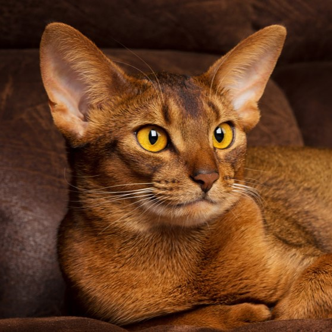

ABYSSINIAN

The Abyssinian is a breed of domestic cat known for its striking appearance and engaging personality. Abyssinian cats are medium-sized with a well-balanced physique. They have a distinctive "ticked" coat, which means each hair has multiple bands of color, giving their fur a salt-and-pepper appearance.
Personality
Abyssinian cats are known for their intelligence, playfulness, and affectionate nature. They are highly social and enjoy interacting with their families. They are not lap cats, but they will often curl up next to you on the couch or in bed. Abyssinians are curious and active cats who love to explore and play. They are also known for their unique vocalizations, which are more like chirps than meows.
WEIGHT:
LENGTH:
LIFE SPAN:
LENGTH:
LIFE SPAN:
Up to 12 pounds
Up to 28 inches
Up to 15 years
EYE COLOR:
ORIGIN:
ORIGIN:
Green or Gold
Indian Ocean coastal regions
and part of Southeast Asia
and part of Southeast Asia
AMERICAN CURL

The American Curl is a distinctive cat breed recognized for its unique, backward-curled ears. American Curl cats are medium-sized with a well-proportioned, rectangular body. They have large, expressive eyes and a sweet expression. Their most striking feature is their ears, which curl backward in a graceful arc, resembling a lynx. American Curls come in both longhaired and shorthaired varieties, with a silky coat and minimal undercoat. They can be found in a wide range of colors and patterns.
Personality
American Curls are known for their affectionate, playful, and outgoing personalities. They are highly social and enjoy spending time with their humans, often following them around the house. They are also known for their gentle nature and adaptability, making them a good choice for families with children and other pets. They are not big talkers but often communicate with happy trilling and cooing.
WEIGHT:
LENGTH:
LIFE SPAN:
LENGTH:
LIFE SPAN:
(Male) 7-10 pounds
(Female) 8 pounds
(Female) 8 pounds
18-20 inches
Typically 10-18 years
EYE COLOR:
ORIGIN:
ORIGIN:
Aqua, Blue, Copper, Green, Gold, Hazel, Orange or Yellow
Unites States